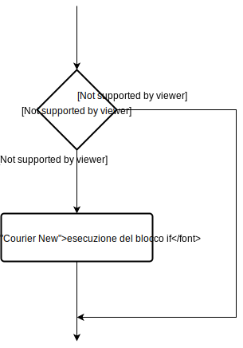
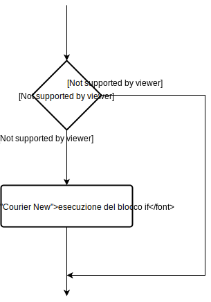
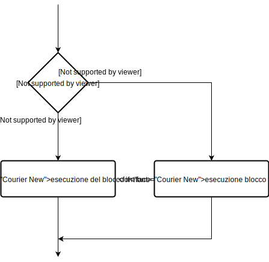
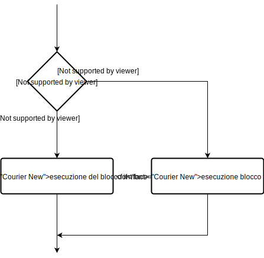
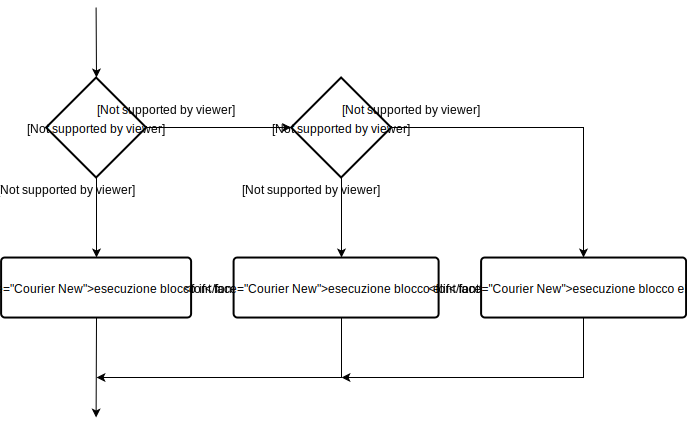
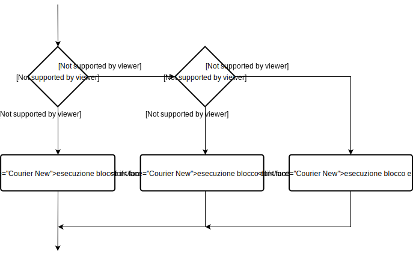

Costrutti condizionali
Come la maggior parte dei linguaggi di programmazione, anche Python mette a disposizione i cosiddetti costrutti condizionali; in sostanza parliamo di espressioni il cui esito, cioè il risultato prodotto, dipende dalla verifica o meno di una condizione precedentemente definita. Per la definizione di un costrutto condizionale si utilizzano le keywords
if (l'unica obbligatoria), elif ed else, gli esempi proposti di seguito ne evidenzieranno il funzionamento.
if statement
La keyword
if ha il compito di introdurre una condizione che, se viene verificata, comporterà l'esecuzione di un blocco di codice dedicato. In caso contrario, tale blocco sarà ignorato. Sintatticamente, un if statement, in Python, ha la seguente forma:
if condizione: # blocco main
istruzione # blocco if
In questo caso, il programma valuta la
Altra cosa da ricordare, quando si utilizza un

Concludiamo questa sottosezione dedicata all'
condizione, ed esegue l'istruzione solo se la condizione è True. Dunque, se la condizione è False, l'istruzione non viene eseguita. Si noti, in particolare, che in Python il blocco dell'if statement viene preceduto dai due punti :, ed è indicato dal suo livello di indentazione. Infatti, il corpo dell'if comincia con un nuovo livello di indentazione, e termina quando questo nuovo livello di indentazione viene rimosso.Altra cosa da ricordare, quando si utilizza un
if statement, è la seguente: Python interpreta come True tutti i valori non nulli e diversi da zero. Gli unici valori considerati come False sono quindi None (ossia, il valore nullo) e 0. Detto questo, riportiamo di seguito il diagramma di flusso dell'if statement, che sintetizza quanto detto in precedenza.
Concludiamo questa sottosezione dedicata all'
if statement con un semplice esempio:
# se il numero è positivo, stampa un messaggio appropriato
num = 3
if num > 0:
print(num + "è un numero positivo.")
print("Questo messaggio viene sempre stampato.")
num = -1
if num > 0:
print(num + "è un numero positivo.")
print("Anche questo messaggio viene sempre stampato.")
Quando questo programma viene eseguito, l'output risulterà essere:
3 è un numero positivo.
Questo messaggio viene sempre stampato.
Anche questo messaggio viene sempre stampato.
Come possiamo osservare, nell'esempio precedente
num > 0 è la condizione che stiamo valutando. Il blocco dell'if viene eseguito solo quando tale condizione è True. In particolare, quando la variabile num è uguale a 3, allora la condizione è vera e il blocco dell'if viene eseguito. Quando invece la variabile num è pari a -1, il blocco dell'if viene saltato. Inoltre, le istruzioni di print() che sono al di fuori dei blocchi if verranno sempre eseguite, indipendentemente dal risultato della verifica.
if...else statement
Nei costrutti condizionali, la keyword
else consente di definire un'istruzione alternativa che verrà eseguita quando una condizione imposta tramite if non dovesse verificarsi. Sintatticamente, un if...else statement, in Python, ha la seguente forma:
if condizione:
blocco if
else:
blocco else
Ebbene, l'

Concludiamo questa sottosezione dedicata all'
if...else statement valuta la condizione ed esegue il blocco dell'if solo se la condizione è True. Se invece la condizione è False, viene eseguito il blocco dell'else. Anche in tal caso l'indentazione è usata per separare i due blocchi. Detto questo, riportiamo di seguito il diagramma di flusso dell'if...else statement, che sintetizza quanto detto in precedenza.
Concludiamo questa sottosezione dedicata all'
if...else statement con un semplice esempio:
"""
Il programma verifica se il numero è positivo o negativo,
per poi mostrare un messaggio appropriato
"""
num = 3
# Per testare il programma, si provi a utilizzare anche i seguenti valori di num:
# num = -5
# num = 0
if num >= 0:
print("Numero maggiore o uguale a zero.")
else:
print("Numero negativo")
Nel suddetto esempio, quando
Se invece
Infine, se
num è uguale a 3, la condizione viene verificata, di conseguenza il blocco dell'if viene eseguito mentre quello dell'else viene ignorato.Se invece
num è uguale a -5, la condizione non viene verificata, e stavolta il blocco dell'if viene ignorato mentre quello dell'else viene eseguito.Infine, se
num è pari a 0, la condizione è vera e quindi, come nel primo caso, il blocco dell'if viene eseguito mentre quello dell'else viene saltato.
if...elif...else statement
La keyword

Concludiamo questa sottosezione dedicata all'
elif è un diminutivo per else if. Si tratta di una parola chiave che consente verifiche di più condizioni. In particolare, se la condizione dell'if è False, allora si passa alla verifica della condizione del successivo blocco elif, e così via. Infine, se tutte le condizioni incontrate lungo il cammino sono False, allora viene eseguito il blocco dell'else.
if condizione_1:
blocco if
elif condizione_2:
blocco elif
else:
blocco else
Si noti che solo un blocco, tra i vari blocchi if...elif...else, viene eseguito. Inoltre, ciascun blocco if può essere associato a più blocchi elif, ma può avere un unico blocco else. Detto questo, riportiamo di seguito il diagramma di flusso dell'if...elif...else statement, che sintetizza quanto detto in precedenza.

Concludiamo questa sottosezione dedicata all'
if...elif...else statement con un semplice esempio:
"""
In questo programma, verifichiamo se il numero
è positivo, uguale a zero, o negativo, per
poi stampare un messaggio adeguato
"""
num = 3.4
# Per testare il programma, si provi a utilizzare anche i seguenti valori di num
# num = 0
# num = -4.5
if num > 0:
print("Numero positivo")
elif num == 0:
print("Numero uguale a zero")
else:
print("Numero negativo")
Commentiamo il suddetto script: quando la variabile
num è positiva, il programma stampa il messaggio Numero positivo. Se invece num è uguale a 0, viene stampato Numero uguale a zero. Infine, se nessuna delle condizioni precedenti è verificata, sul display apparirà la scritta Numero negativo.
if statement annidati
Possiamo avere casi in cui un
Concludiamo questa sottosezione con un esempio:
if...elif...else statement è all'interno di un altro if...elif...else statement. In linguaggio informatico questa situazione viene indicata come un annidamento di strutture. Ovviamente, possiamo iterare il ragionamento, nel senso che possiamo considerare un if...elif...else statement all'interno di un altro if...elif...else statement che è a sua volta dentro un terzo if...elif...else statement. L'unico modo che abbiamo per capire in quale di questi statement ci troviamo è un'attenta lettura dei livelli di indentazione. Val la pena notare che le strutture annidate possono creare confusione e, quindi, vanno usate con cautela.Concludiamo questa sottosezione con un esempio:
"""
In questo programma, l'utente inserisce in input un numero.
Tale numero viene poi sottoposto a verifiche annidate per
capire se è positivo, negativo oppure se è uguale a zero.
Infine, viene stampato un messaggio appropriato.
"""
num = float(input("Inserire un numero: "))
if num >= 0:
if num == 0:
print("Numero uguale a zero")
else:
print("Numero positivo")
else:
print("Numero negativo")
Si lascia al lettore, come esercizio, la verifica dell'output prodotto dal programma nelle diverse situazioni.
Esempio di indentazione
In una delle precedenti sezioni abbiamo visto che in Python, per delimitare i blocchi di codice, basta usare l'indentazione, aggiungendo o togliendo 4 spazi per ogni livello. Nei due esempi che seguono, vedremo che codice apparentemente simile ha significati diversi a seconda dell’indentazione.
In questo primo esempio, l’
In questo primo esempio, l’
else ha lo stesso livello di indentazione del secondo if, e viene quindi eseguito quando cond_1 è vera e cond_2 è falsa:
if cond_1:
print('cond_1 è vera')
if cond_2:
print('cond_1 è vera, cond_2 è vera')
else:
print('cond_1 è vera, cond_2 è falsa')
In quest’altro esempio, l’
else ha lo stesso livello di indentazione del primo if, e viene quindi eseguito quando cond_1 è falsa:
if cond_1:
print('cond_1 è vera')
if cond_2:
print('cond_1 è vera, cond_2 è vera')
else:
print('cond_1 è vera, cond_2 è falsa')
Possiamo notare che il blocco di codice indentato sotto all’
else viene eseguito quando la condizione dell’if corrispondente (cioè quello con lo stesso livello di indentazione dell’else) è falsa.
La keyword pass
Una parola chiave molto utile, in Python, è la parola
pass. Supponiamo infatti che, in fase di sviluppo, ci ritroviamo a dover scrivere un certo blocco di codice, ad esempio un blocco if, e che tale blocco sia particolarmente complesso. Data la sua complessità, decidiamo di lasciare per ultimo il suo sviluppo. Allora, per indicare che tale blocco if sarà sviluppato in seguito, potremo scrivere:
if condizione:
pass
In tal caso, qualora
condizione fosse vera, il programma non eseguirà alcunché. Di fatto, la keyword pass corrisponde a un blocco di codice senza alcuna istruzione all'interno. Di conseguenza, la parola pass fungerà semplicemente da promemoria allo sviluppatore, il quale dovrà ricordarsi in seguito di sviluppare tale blocco che, al momento, è privo di istruzioni.